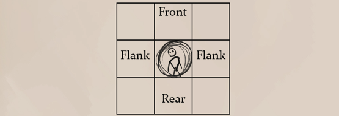

While size dictates the overall space that a creature takes, not all large creatures are shaped the same way. As such a large creature does necessarily have to be 2x2 or 3x3 tiles. As long as the number of occupied tiles are between 4 and 15, it'd be considered a large creatue, as seen below.
Hectrea are deadly large creatures (2x3), their long tusked face allowing allowing them to charge their prey head on.
Some creatures, such as snakes, sirens or lillends have a long tail section. Their sections are shown as separate tokens which must be connected up to the first body/head token. Each square chosen counts as a tail section.
}}Thresher sirens are fierce predators while underwater or within the air, but their long finned tail meant for swimming makes them quite vulnerable while grounded.
Most creatures can only face a single direction at a time. This is their front, which allows for them to fully use their dodge defense. If they are attacked from the sides, that would be the flank, which gives penalties and at worse, they are attacked from the back. For creatures with a tail, attacking any part of the tail is counted as attacking their back.
A creature's front is always dictated by the direction of the token.
Vision, or sight, is a character's ability to see properly depending on the amount of light that is currently available.
The amount of light can truly vary between areas however is simplified and categorized as follows.
Daylight : Typical vision in daylight can go for miles on end and is only interrupted by line of sight, or is limited if a creature is light sensitive.
Partial Light : While under a moonlit night or carrying only a simple candle, many creatures are limited in their vision. Normal vision based creatures have a hard time seeing far under circumstances of partial light.
Darkness : Vision fails completely while in complete darkness, most often while delving in depths of ancient cave systems or wandering in underground adventures. When there is no light, characters with normal vision are considered blind, taking even greater penalties.
When a character's vision is not fully compatible with the amount of light available, they take certain penalties.
Blurred : The least harmful penalty, blurred vision makes the character take -1 to all values of physical actions per distance threshold, including combat and skill checks up to -5.
Strained : Should a character only be able to see general shapes, they take -2 to all values of physical actions per distance threshold up to -10.
Blind : If a character is blind, they must rely on their other senses. Whenever a blind character wishes to do a physical action, they must first roll a die to see if they are even facing the right way.